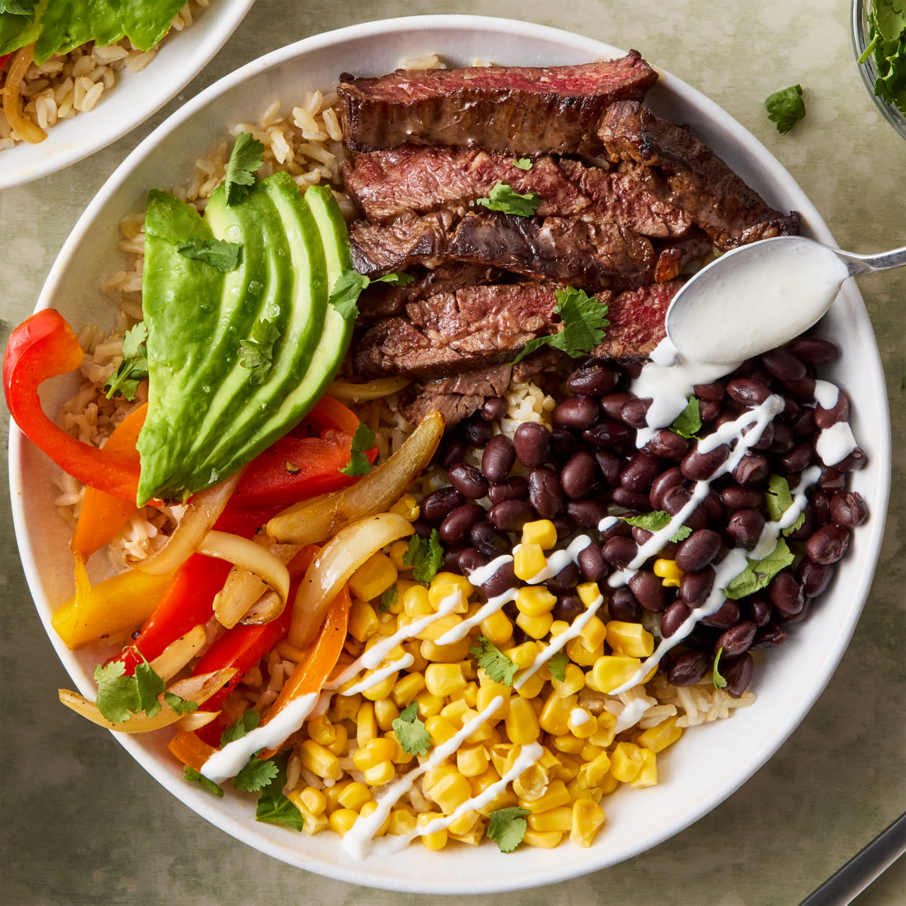

Our Vision
Thoughtfully crafted. Expertly tested.
At Women For A Man, we approach home cooking as a craft. Our platform is a curated resource for individuals who value quality ingredients, reliable techniques, and the elegance of a well-prepared meal. We believe that the kitchen should be a space of creativity and calm, and our mission is to deliver a seamless experience that elevates the way you cook, host, and savor the moment.
Our Vision
To set the standard for culinary excellence at home, creating a trusted space where passion for food translates into timeless hospitality and genuine human connection.